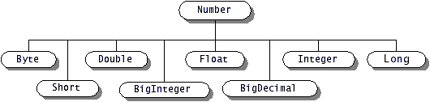

Feedback Form
|
|
Start of Tutorial > Start of Trail > Start of Lesson |
Search
Feedback Form |
This section begins with a discussion of theNumberclass in
java.langAdditionally, this section talks about other classes you might need to work with numbers. For instance, if you need to display a number in a particular format, you can use the
NumberFormatDecimalFormatjava.textto format them. Also, theMathjava.langcontains class methods that perform mathematical functions beyond those provided by the language. This class has methods for the trigonometric functions, exponential functions, and so on. Number classes:
Wrappers for other data types (for completeness): Beyond basic arithmetic:
|
|
Start of Tutorial > Start of Trail > Start of Lesson |
Search
Feedback Form |
Copyright 1995-2004 Sun Microsystems, Inc. All rights reserved.